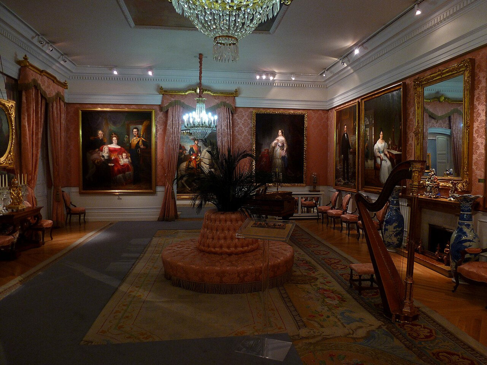

5 Citas Originales en Madrid para salir de la típica cena (Cerámica, Vino y Velas)
Si ya habéis ido a todos los restaurantes de moda y queréis una cita que de verdad se recuerde: pintar cerámica con vino tinto, escuchar un cuarteto de cuerda entre cientos de velas o perderse en un invernadero tropical.

1. Taller de 'Cerámica y Vino' a media luz en Chamberí o Malasaña
Se ha convertido en la cita favorita en Madrid por una razón: quita toda la presión de una primera o segunda cita porque tenéis las manos ocupadas creando algo juntos mientras tomáis un buen Mencía o Rioja con música indie de fondo.
2. Concierto íntimo a la luz de 1.500 velas en un palacio histórico
Escuchar las bandas sonoras de Hans Zimmer, Queen o Ludovico Einaudi interpretadas por un cuarteto de cuerda en una cátedra histórica iluminada únicamente por velas es un acierto garantizado antes de ir a picar algo por el Barrio de las Letras.
3. Paseo romántico de fin de semana por el Templete de Baco y el Laberinto de El Capricho
Creado en 1784 por la Duquesa de Osuna, es el jardín histórico más romántico de Madrid: tiene un laberinto de laurel, un embarcadero neoclásico con cisnes negros, el Templete de Baco con columnas jónicas y hasta un búnker subterráneo.
4. Cita secreta en el Jardín Cubierto de Salvador Bachiller o el Salón de Té del Santo Mauro
Subiendo por el interior de la tienda llegas a un invernadero cubierto de plantas colgantes y sillones de mimbre donde tomar un brunch o merienda en pareja completamente aislados del bullicio del centro.
5. Noche de jazz en vivo y cóctel clásico en una bóveda de ladrillo del siglo XIX
Sustituye el bar ruidoso de siempre por una mesa para dos con lámpara baja escuchando jazz, soul o bossa nova en directo en uno de los clubes con más historia de Europa.
Preguntas frecuentes
¿Cuál es el mejor plan en pareja en Madrid si llueve?
Un taller de cerámica y vino en Chamberí o una sesión en el Cine Doré seguida de una merienda en el interior ajardinado de Salvador Bachiller son opciones cubiertas perfectas para días de lluvia.